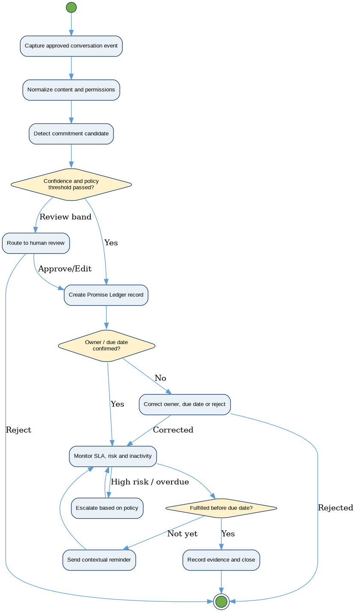
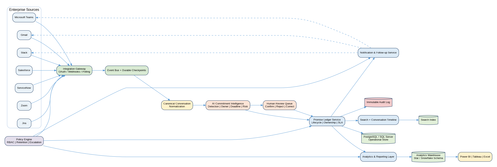

An AI-powered Promise Ledger and conversation intelligence concept that turns workplace commitments into governed, measurable business objects.
Business AnalysisSQL AnalyticsData ModelingResponsible AIDesigned by Akshat Bhagat
Critical promises are made in Slack, Teams, Gmail, meetings, Jira, CRM notes, and support tickets. Many never become formal tasks, leaving hidden ownership, uncertain deadlines, duplicated follow-up, and stalled work.
OpenLoop detects those commitments, links them to source evidence, and tracks the lifecycle through confirmation, reassignment, escalation, cancellation, or fulfillment.


All results are calculated from the included synthetic dataset.
Business case, stakeholders, BRD, FRD, RACI, business rules, process models, user stories, acceptance criteria, RTM, and UAT.
Operational ER model, analytics star schema, synthetic dataset, SQL library, KPI definitions, data-quality controls, and dashboard specifications.
Promise detection, owner and deadline extraction, risk prediction, confidence thresholds, human review, audit, privacy, and model governance.
Roadmap, sprint plan, release plan, RAID, risk register, change control, testing strategy, and reporting catalogue.
PostgreSQLSQL ServerPower BIExcelPythonPandasJupyterJiraFigma
This is an independent, synthetic portfolio case study. Modeled benefits are not claimed as realized production outcomes.